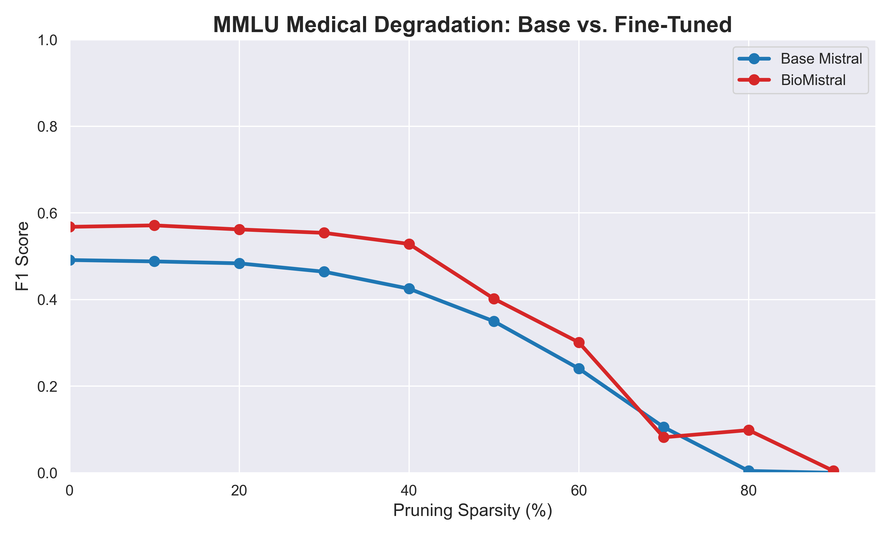
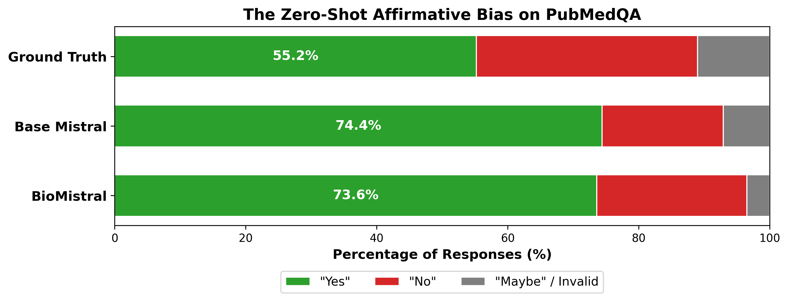
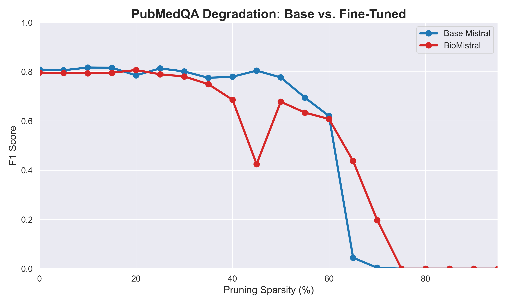
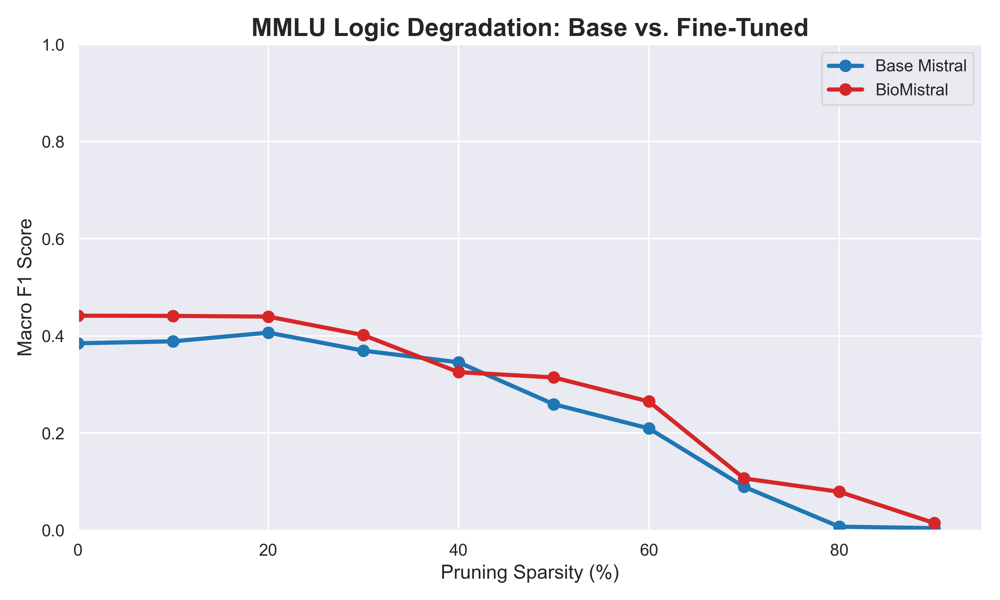

BioMedical LLM Lobotomy
Spring 2026 CSCI 5541 NLP: Class Project - University of Minnesota
The Lobotomizers
Brandon Borzello
Shantanu Dalvi
Brandon Borzello
Shantanu Dalvi
Large Language Models (LLMs) require massive computational resources, which results in barriers to deployment in resource-constrained medical environments. While research such as the Lottery Ticket Hypothesis and SparseGPT demonstrates that general-purpose neural networks are extremely over-parametrized and compressible, the limits of this sparsity when it comes to a specific field like medical knowledge was largely unexplored. In this report, we outline the results of our study using unstructured magnitude pruning on the BioMistral-7B and Mistral architectures. By evaluating the models on the PubMedQA and MMLU datasets using increasing levels of sparsity, we aimed to find the precise computational cost of retaining specialized medical reasoning. Ultimately, our data invalidates the idea that fine-tuning makes a model brittle; instead, we found that domain specialization creates a "Structural Shield" that protects medical knowledge against severe architectural damage.
Fine-tuning does not make medical models brittle. We lobotomized BioMistral and Base Mistral using unstructured pruning. As shown below, BioMistral developed a "Structural Shield" that protected its reasoning up to 60% sparsity, whereas the base model collapsed rapidly.

What did you try to do? What problem did you try to solve?
Modern LLMs have billions of parameters, which result in the requirement of massive amounts of computing power. The sheer scale of this computing makes it nearly impossible to run these models in resource-constrained or offline environments, such as local triage centers or hospitals.
What are your objectives?
The core issue is that we do not know for certain how much of the massive parameter counts these models boast are strictly necessary for specialized, specific knowledge of particular fields. Our goal was to determine how much redundancy is present inside biomedical LLMs. More specifically: How many of a biomedical LLM's parameters can be pruned before it experiences a drastic falloff in medical knowledge and diagnostic accuracy?
How is it done today, and what are the limits of current practice?
Current research demonstrates that up to 50-60% of a general-purpose neural network's weights can be redundant. However, the literature only focuses on general-purpose LLMs. The limitation of current practice is that the specific methodology of testing unstructured pruning on a specialized fine-tuned LLM, and comparing it to a general-purpose control model, had not been explored. The standard assumption is that fine-tuning strictly improves model utility, but it was unknown if forcing a model to specialize structurally compromised its foundational logic circuits.
Who cares? If you are successful, what difference will it make?
This research is important for machine learning engineers and healthcare providers looking to deploy localized LLMs. By finding the limits of this sparsity, our findings can be applied to estimate the amount of computing power that can be saved by pruning. This allows highly capable diagnostic tools to run on smaller, consumer-grade hardware without relying on cloud APIs, which is often a strict requirement for HIPAA compliance.
What did you do exactly? How did you solve the problem? Why did you think it would be successful? Is anything new in your approach?
We evaluated both the open-source BioMistral-7B model and the base Mistral-7B model. Because Mistral serves as the foundation for BioMistral, evaluating both provided a crucial control metric. First, we began with a baseline evaluation at 0% sparsity. Next, using a custom PyTorch script, we systematically zeroed-out the lowest-magnitude weights across the layers of both models using increments of 5% to map the cognitive cliff. To evaluate accuracy effectively, we created a multi-tiered regex parser to successfully isolate true factual amnesia from simple instruction-following collapse.
What problems did you anticipate? What problems did you encounter? Did the very first thing you tried work?
One major challenge we encountered was VRAM constraints. Operating on a Dual T4 GPU environment necessitated a transition from global magnitude pruning to layer-wise L1 norm unstructured pruning. Global unstructured pruning requires sorting the entire parameter space simultaneously, which instantly triggered Out-Of-Memory (OOM) errors. Layer-wise pruning solved this by isolating the sorting memory overhead to a single tensor boundary at a time.
How did you measure success? What experiments were used? What were the results, both quantitative and qualitative? Did you succeed? Did you fail? Why?
For the MMLU subsets (Logic and Medical), we tracked multiple-choice Classification Accuracy. For PubMedQA, where the questions are answered in a "Yes, No, Maybe" format, we tracked the Macro F1-score to balance precision and recall, as a false-negative in a medical setting is a catastrophic failure.
Our evaluations successfully charted the degradation curves for both models. Interestingly, we discovered a "Zero-Shot Affirmative Bias" on PubMedQA. Both models exploited the dataset's ground truth imbalance (55.2% "Yes" answers) by defaulting to affirmative answers over 73% of the time, resulting in an artificially tied baseline. Because the baseline was compromised, the true value of the fine-tuning was only revealed during degradation. BioMistral demonstrated superior structural resilience, yielding higher Area Under the Curve (AUC) robustness scores across the board.
| Dataset / Domain | Base Mistral AUC | BioMistral AUC |
|---|---|---|
| PubMedQA | 0.4871 | 0.4787 (Tie due to Bias) |
| MMLU: Logic | 0.2282 | 0.2606 |
| MMLU: Medical | 0.2894 | 0.3399 |

The Zero-Shot Affirmative Bias. Both models falsely achieve a high baseline by defaulting to "Yes" to exploit the ground truth's imbalance.

PubMedQA Degradation. The illusion of the tied baseline breaks as sparsity increases.

MMLU Logic Degradation. The medical fine-tuning unexpectedly fortified foundational deductive reasoning.
Qualitative Error Analysis: At 50% sparsity in the MMLU College Medicine subset, Base Mistral suffered from instruction collapse. While it generated the correct underlying string ("ATP"), it hallucinated the start of a new prompt ("QUESTION"), breaking the required multiple-choice structure and triggering an invalid ("X") parse in our pipeline. Conversely, BioMistral's structural shield maintained both factual accuracy and generative discipline, successfully outputting the correct semantic answer. By 75% sparsity, the base model deteriorated into total generative amnesia, outputting meaningless unicode loops (e.g., "Ú /******/").
How easily are your results able to be reproduced by others?
These results are highly replicable. Because we utilized open-source models (BioMistral and Mistral) rather than proprietary ones, and evaluated them on public benchmark datasets, any researcher with a custom PyTorch ablation script can reproduce these degradation curves.
Did your dataset or annotation affect other people's choice of research or development projects to undertake?
Our findings regarding the PubMedQA dataset will force a shift in how future researchers approach medical AI benchmarking. By proving that PubMedQA is highly susceptible to the "Zero-Shot Affirmative Bias" exploit, our work demonstrates that researchers can no longer rely on raw baseline F1 scores for this dataset. Future development projects will be forced to implement strict multi-tiered parsing defenses similar to ours to ensure they are measuring true medical reasoning rather than statistical probability gaming.
Does your work have potential harm or risk to our society? What kinds? If so, how can you address them?
There is a potential risk to society if highly pruned, "lobotomized" LLMs are deployed without rigorous testing. If a pruned model outputs a false-negative (sending a sick patient home and saying they're healthy), it is a catastrophic failure. To address this, developers must establish strict sparsity safety thresholds based on resilience curves like ours before deploying models in clinical settings.
What limitations does your model have? How can you extend your work for future research?
A major limitation of our current model of testing is that unstructured magnitude pruning does not natively speed up inference or save electricity without specialized sparse-compute hardware. Furthermore, at extreme sparsity (80%+), pruning blindly severs critical self-attention mechanisms, causing unavoidable formatting collapse in both models. If we extend this work for future research, we can utilize structured pruning to remove entire attention heads rather than isolated parameters, and apply our findings to test model quantization to abstract the exact compute power saved.